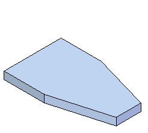
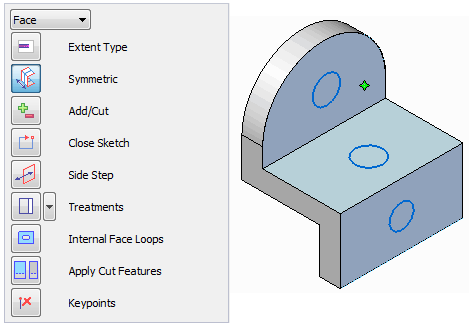

Constructing features using the feature construction commands
Solid Edge provides a feature-based modeling workflow. This workflow is where you select a feature construction command first, such as Extrude, Hole, or Round, and then the software guides you through the rest of the process, prompting you for input at each step.

The first step is to click the feature command. You can then use the command bar to define the input required to complete the feature. PromptBar, located directly below the command ribbon near the top of the application window, also displays prompts as to what you should do.
Command bar
The command bar for each feature command contains all the options available for the command.
The command options are contained in a vertical window which can be docked with other windows.

All options specific to the command are included in the command bar, and are generally organized in the sequence you would use to complete the command. You can also use the command bar to go back to a previous step, or to go to an optional step. Although feature construction is a sequential process, you do not have to start all over again if you want to change something you did in an earlier step.
Along with the command bar, the PromptBar guides you as you complete the necessary command options.
Construction and Reference Elements
You can use construction and reference elements to help you construct features. For example, when constructing a hole feature, you can draw a construction line to help you position the hole properly. You can use the Construction command to change a sketch element into a construction element, or a construction element into a sketch element. Construction elements display using a different line style than sketch elements.
Reference elements are planes and axes used to define sketch planes, extrude extents, and revolve axes.
How do I
Select a featureLearn more
Feature modelingVent features